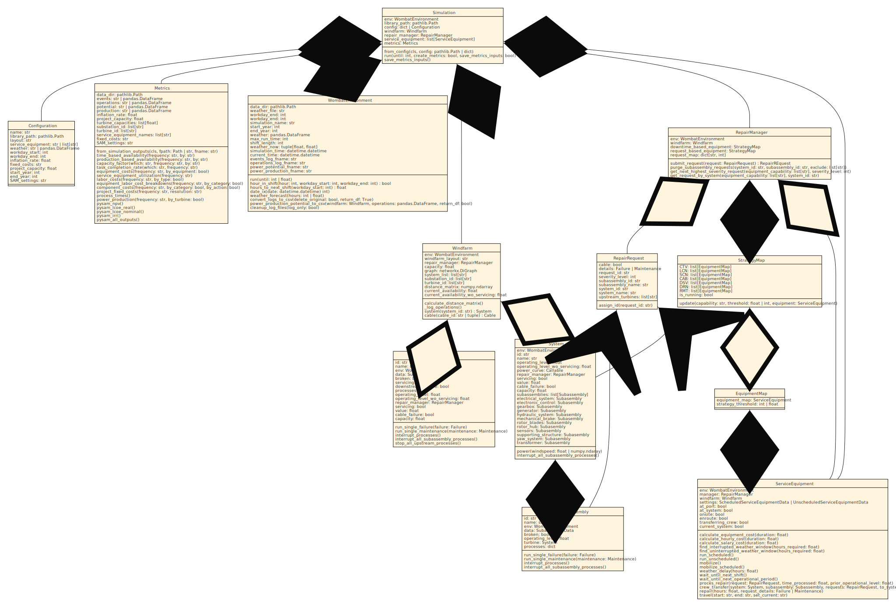

Simulation Core Classes#
There are a variety of components that enable a simulation to be run, from the environment to the management of repairs to the servicing equipment. The below will show how each of the APIs are powered to enable the full flexibility of modeling.
{kind=link}
Environment#
- class wombat.core.environment.WombatEnvironment(data_dir, weather_file, workday_start, workday_end, simulation_name=None, start_year=None, end_year=None, port_distance=None, non_operational_start=None, non_operational_end=None, reduced_speed_start=None, reduced_speed_end=None, reduced_speed=0.0, random_seed=None, random_generator=None)[source]#
The primary mechanism for powering an O&M simulation. This object has insight into all other simulation objects, and controls the timing, date/time stamps, and weather conditions.
- Parameters:
data_dir (pathlib.Path | str) -- Directory where the inputs are stored and where to save outputs.
weather_file (str) -- Name of the weather file. Should be contained within
data_dir/weather/, with columns "datetime", "windspeed", and, optionally, "waveheight". The datetime column should adhere to the following format: "MM/DD/YY HH:MM", in 24-hour time.workday_start (int) -- Starting time for the repair crew, in 24 hour local time. This can be overridden by an
ServiceEquipmentDataobject that operates outside of the "typical" working hours.workday_end (int) -- Ending time for the repair crew, in 24 hour local time. This can be overridden by an
ServiceEquipmentDataobject that operates outside of the "typical" working hours.simulation_name (str | None, optional) --
Name of the simulation; will be used for naming the log file, by default None. If
None, then the current time will be used. Will always save todata_dir/outputs/logs/simulation_name.log.start_year (int | None, optional) -- Custom starting year for the weather profile, by default None. If
Noneor less than the first year of the weather profile, this will be ignored.end_year (int | None, optional) -- Custom ending year for the weather profile, by default None. If
Noneor greater than the last year of the weather profile, this will be ignored.port_distance (int | float) -- The simulation-wide daily travel distance for servicing equipment. This should be used as a base setting when multiple or all servicing equipment will be operating out of the same base location, but can be individually modified.
non_operational_start (str | datetime.datetime | None) -- The starting month and day, e.g., MM/DD, M/D, MM-DD, etc. for an annualized period of prohibited operations. When defined at the environment level, an undefined or later starting date will be overridden for all servicing equipment and any modeled port, by default None.
non_operational_end (str | datetime.datetime | None) -- The ending month and day, e.g., MM/DD, M/D, MM-DD, etc. for an annualized period of prohibited operations. When defined at the environment level, an undefined or earlier ending date will be overridden for all servicing equipment and any modeled port, by default None.
reduced_speed_start (str | datetime.datetime | None) -- The starting month and day, e.g., MM/DD, M/D, MM-DD, etc. for an annualized period of reduced speed operations. When defined at the environment level, an undefined or later starting date will be overridden for all servicing equipment and any modeled port, by default None.
reduced_speed_end (str | datetime.datetime | None) -- The ending month and day, e.g., MM/DD, M/D, MM-DD, etc. for an annualized period of reduced speed operations. When defined at the environment level, an undefined or earlier ending date will be overridden for all servicing equipment and any modeled port, by default None.
reduced_speed (float) -- The maximum operating speed during the annualized reduced speed operations. When defined at the environment level, an undefined or faster value will be overridden for all servicing equipment and any modeled port, by default 0.0.
random_seed (int | None) -- The random seed to be passed to a universal NumPy
default_rngobject to generate Weibull random generators, by default None.random_generator (np.random._generator.Generator | None) -- An optional numpy random generator that can be provided to seed a simulation with the same generator each time, in place of the random seed. If a
random_seedis also provided, this will override the random seed, by default None.
- Raises:
FileNotFoundError -- Raised if
data_dircannot be found.
- _register_windfarm(windfarm)[source]#
Adds the simulation windfarm to the class attributes.
- Return type:
None- Parameters:
windfarm (Windfarm)
- run(until=None)[source]#
Extends the
simpy.Environment.runmethod to change the default behavior if no argument is passed tountil, which will now run a simulation until the end of the weather profile is reached.- Parameters:
until (Optional[Union[int, float, Event]], optional) -- When to stop the simulation, by default None. See documentation on
simpy.Environment.runfor more details.
- get_random_seconds(low=0, high=10)[source]#
Generate a random number of seconds to wait, between
lowandhigh.- Parameters:
low (int, optional) -- Minimum number of seconds to wait, by default 0.
high (int, optional) -- Maximum number of seconds to wait, by default 10.
- Return type:
float- Returns:
float -- Number of seconds to wait.
- property simulation_time: datetime#
Current time within the simulation ("datetime" column within weather).
- is_workshift(workday_start=-1, workday_end=-1)[source]#
Check if the current simulation time is within the windfarm's working hours.
- Parameters:
workday_start (int) -- A valid hour in 24 hour time, by default -1. This should only be provided from an
ServiceEquipmentDataobject.workday_endmust also be provided in order to be used.workday_end (int) -- A valid hour in 24 hour time, by default -1. This should only be provided from an
ServiceEquipmentDataobject.workday_startmust also be provided in order to be used.
- Return type:
bool- Returns:
bool -- True if it's valid working hours, False otherwise.
- hour_in_shift(hour, workday_start=-1, workday_end=-1)[source]#
Checks whether an
houris within the working hours.- Parameters:
hour (int) -- Hour of the day.
workday_start (int) -- A valid hour in 24 hour time, by default -1. This should only be provided from an
ServiceEquipmentDataobject.workday_endmust also be provided in order to be used.workday_end (int) -- A valid hour in 24 hour time, by default -1. This should only be provided from an
ServiceEquipmentDataobject.workday_startmust also be provided in order to be used.
- Return type:
bool- Returns:
bool -- True if
houris during working hours, False otherwise.
- hours_to_next_shift(workday_start=-1)[source]#
Time until the next work shift starts, in hours.
- Parameters:
workday_start (int) -- A valid hour in 24 hour time, by default -1. This should only be provided from an
ServiceEquipmentDataobject.- Return type:
float- Returns:
float -- Hours until the next shift starts.
- property current_time: str#
Timestamp for the current time as a datetime.datetime.strftime.
- date_ix(date)[source]#
The first index of a future date. This corresponds to the number of hours until this dates from the very beginning of the simulation.
- Parameters:
date (datetime.datetime | datetime.date) -- A date within the environment's simulation range.
- Return type:
int- Returns:
int -- Index of the weather profile corresponds to the first hour of
date.
- _weather_setup(weather_file, start_year=None, end_year=None)[source]#
Reads the weather data from the "<inputs>/weather" directory, and creates the
start_dateandend_datetime stamps for the simulation.This also fills any missing data with zeros and interpolates the values of any missing datetime entries.
- Parameters:
weather_file (str) -- Name of the weather file to be used by the environment. Should be contained within
data_dir/weather.start_year (Optional[int], optional) -- Custom starting year for the weather profile, by default None. If
Noneor less than the first year of the weather profile, this will be ignored.end_year (Optional[int], optional) -- Custom ending year for the weather profile, by default None. If
Noneor greater than the last year of the weather profile, this will be ignored.
- Return type:
DataFrame- Returns:
pd.DataFrame -- The wind (and wave) timeseries.
- property weather_now: DataFrame#
The current weather.
- Returns:
pl.DataFrame -- A length 1 slice from the weather profile at the current
int()rounded hour, in simulation time.
- weather_forecast(hours)[source]#
Returns the datetime, wind, wave, and hour data for the next
hourshours, starting from the current hour's weather.- Parameters:
hours (Union[int, float]) -- Number of hours to look ahead, rounds up to the nearest hour.
- Return type:
tuple[Series,Series,Series,Series]- Returns:
tuple[pl.Series, pl.Series, pl.Series, pl.Series] -- Each of the relevant columns (datetime, wind, wave, hour) from the weather profile.
- log_action(*, agent, action, reason, additional='', system_id='', system_name='', part_id='', part_name='', system_ol=0, part_ol=0, duration=0, distance_km=0, request_id='na', location='na', materials_cost=0, hourly_labor_cost=0, salary_labor_cost=0, equipment_cost=0)[source]#
Formats the logging messages into the expected format for logging.
- Parameters:
agent (str) -- Agent performing the action.
action (str) -- Action that was taken.
reason (str) -- Reason an action was taken.
additional (str) -- Any additional information that needs to be logged.
system_id (str) -- Turbine ID,
System.id, by default "".system_name (str) -- Turbine name,
System.name, by default "".part_id (str) -- Subassembly, component, or cable ID,
_.id, by default "".part_name (str) -- Subassembly, component, or cable name,
_.name, by default "".system_ol (float | int) -- Turbine operating level,
System.operating_level. Use an empty string for n/a, by default 0.part_ol (float | int) -- Subassembly, component, or cable operating level,
_.operating_level. Use an empty string for n/a, by default 0.request_id (str) -- The
RepairManagerassigned request_id found inRepairRequest.request_id, by default "na".location (str) -- The location of where the event ocurred: should be one of site, port, enroute, or system, by default "na".
duration (float) -- Length of time the action lasted, by default 0.
distance (float) -- Distance traveled, in km, if applicable, by default 0.
materials_cost (Union[int, float], optional) -- Total cost of materials for action, in USD, by default 0.
hourly_labor_cost (Union[int, float], optional) -- Total cost of hourly labor for action, in USD, by default 0.
salary_labor_cost (Union[int, float], optional) -- Total cost of salaried labor for action, in USD, by default 0.
equipment_cost (Union[int, float], optional) -- Total cost of equipment for action, in USD, by default 0.
distance_km (float)
- Return type:
None
- load_events_log_dataframe()[source]#
Imports the logging file created in
runand returns it as a formattedpandas.DataFrame.- Return type:
DataFrame- Returns:
pd.DataFrame -- The formatted logging data from a simulation.
- _calculate_windfarm_total(op, prod=None)[source]#
Calculates the overall wind farm operational level, accounting for substation downtime by multiplying the sum of all downstream turbine operational levels by the substation's operational level.
- Parameters:
op (pd.DataFrame) -- The turbine and substation operational level DataFrame.
prod (DataFrame | None)
- Return type:
DataFrame
Notes
This is a crude cap on the operations, and so a smarter way of capping the availability should be added in the future.
- Return type:
DataFrame- Returns:
pd.DataFrame -- The aggregate wind farm operational level.
- Parameters:
op (DataFrame)
prod (DataFrame | None)
- _calculate_adjusted_production(op, prod)[source]#
Calculates the overall wind farm power production and adjusts individual turbine production by accounting for substation downtime. This is done by multiplying the all downstream turbine operational levels by the substation's operational level.
- Parameters:
op (pd.DataFrame) -- The operational level DataFrame with turbine, substation, and windfarm columns.
prod (pd.DataFrame) -- The turbine energy production DataFrame.
- Return type:
DataFrame
Notes
This is a crude cap on the operations, and so a smarter way of capping the availability should be added in the future.
- Return type:
DataFrame- Returns:
pd.DataFrame -- Either the aggregate wind farm operational level or the total wind farm energy production if the
prodis provided.- Parameters:
op (DataFrame)
prod (DataFrame)
- load_operations_log_dataframe()[source]#
Imports the logging file created in
runand returns it as a formattedpandas.DataFrame.- Return type:
DataFrame- Returns:
pd.DataFrame -- The formatted logging data from a simulation.
- power_production_potential_to_csv(windfarm, operations=None, return_df=True)[source]#
Creates the power production
DataFrameand optionally returns it.- Parameters:
windfarm (wombat.windfarm.Windfarm) -- The simulation's windfarm object.
operations (Optional[pd.DataFrame], optional) -- The operations log
DataFrameif readily available, by default None. IfNone, then it will be created throughload_operations_log_dataframe().return_df (bool, optional) -- Indicator to return the power production for further usage, by default True.
- Return type:
tuple[DataFrame,DataFrame]- Returns:
Tuple[pd.DataFrame, pd.DataFrame] -- The power potential and production timeseries data.
Repair Management#
- class wombat.core.repair_management.RepairManager(env, capacity=inf)[source]#
Provides a class to manage repair and maintenance tasks.
- Parameters:
FilterStore (simpy.resources.store.FilterStore) -- The
simpyclass on which RepairManager is based to manage the repair and maintenance tasks.env (wombat.core.WombatEnvironment) -- The simulation environment.
capacity (float) -- The maximum number of tasks that can be submitted to the manager, by default
np.inf.
- env#
The simulation environment.
- Type:
wombat.core.WombatEnvironment
- windfarm#
The simulated windfarm. This is only used for getting the operational capacity.
- Type:
wombat.windfarm.Windfarm
- _current_id#
The logged and auto-incrememented integer base for the ID generated for each submitted repair request.
- Type:
int
- downtime_based_equipment#
The mapping between downtime-based servicing equipment and their capabilities.
- Type:
StrategyMap
- request_based_equipment#
The mapping between request-based servicing equipment and their capabilities.
- Type:
StrategyMap
- _update_equipment_map(service_equipment)[source]#
Updates
equipment_mapwith a provided servicing equipment object.- Return type:
None- Parameters:
service_equipment (ServiceEquipment)
- _register_windfarm(windfarm)[source]#
Adds the simulation windfarm to the class attributes.
- Return type:
None- Parameters:
windfarm (Windfarm)
- _register_equipment(service_equipment)[source]#
Adds the servicing equipment to the class attributes and adds it to the capabilities mapping.
- Return type:
None- Parameters:
service_equipment (ServiceEquipment)
- _register_port(port)[source]#
Registers the port with the repair manager, so that they can communicate as needed.
- Parameters:
port (Port) -- The port where repairs will occur.
- Return type:
None
- _create_request_id(request)[source]#
Creates a unique
request_idto be logged in therequest.- Parameters:
request (RepairRequest) -- The request object.
- Return type:
str- Returns:
str -- An 11-digit identifier starting with "MNT" for maintenance tasks or "RPR" for repairs.
- Raises:
ValueError -- If the
request.detailsproperty is not aFailureorMaintenanceobject, then a ValueError will be raised.
- _is_request_processing(request)[source]#
Checks if a repair is being performed, or has already been completed.
- Parameters:
request (RepairRequest) -- The request that is about to be submitted to servicing equipment, but needs to be double-checked against ongoing processes.
- Return type:
bool- Returns:
bool -- True if the request is ongoing or completed, False, if it's ok to processed with the operation.
- _run_equipment_downtime(request)[source]#
Run any equipment that has a pending request where the current windfarm operating capacity is less than or equal to the servicing equipment's threshold.
TODO: This methodology needs to better resolve dispatching every equipment relating to a request vs just the one(s) that are required. Basically, don't dispatch every available HLV, but just one plus one of every other capability category that has pending requests
- Return type:
None|Generator- Parameters:
request (RepairRequest)
- _run_equipment_requests(request)[source]#
Run the first piece of equipment (if none are onsite) for each equipment capability category where the number of requests is greater than or equal to the equipment's threshold.
- Return type:
None|Generator- Parameters:
request (RepairRequest)
- register_request(request)[source]#
The method to submit requests to the repair mananger and adds a unique identifier for logging.
- Parameters:
request (RepairRequest) -- The request that needs to be tracked and logged.
- Return type:
- Returns:
RepairRequest -- The same request as passed into the method, but with a unique identifier used for logging.
- submit_request(request)[source]#
The method to submit requests to the repair mananger and adds a unique identifier for logging.
- Parameters:
request (RepairRequest) -- The request that needs to be tracked and logged.
- Return type:
None- Returns:
RepairRequest -- The same request as passed into the method, but with a unique identifier used for logging.
- get_request_by_system(equipment_capability, system_id=None)[source]#
Gets all repair requests for a certain turbine with given a sequence of
equipment_capabilityas long as it isn't registered as unable to be serviced.- Parameters:
equipment_capability (list[str]) -- The capability of the servicing equipment requesting repairs to process.
system_id (Optional[str], optional) -- ID of the turbine or OSS; should correspond to
System.id, by default None. If None, then it will simply sort the list bySystem.idand return the first repair requested.
- Return type:
FilterStoreGet|None- Returns:
Optional[FilterStoreGet] -- The first repair request for the focal system or None, if self.items is empty, or there is no matching system.
- get_request_by_severity(equipment_capability, severity_level=None)[source]#
Gets the next repair request by
severity_level.- Parameters:
equipment_capability (list[str]) -- The capability of the equipment requesting possible repairs to make.
severity_level (int) -- Severity level of focus, default None.
- Return type:
FilterStoreGet|None- Returns:
Optional[FilterStoreGet] -- Repair request meeting the required criteria.
- invalidate_system(system, tow=False)[source]#
Disables the ability for servicing equipment to service a specific system, sets the turbine status to be in servicing, and interrupts all the processes to turn off operations.
- interrupt_system(system, replacement=None)[source]#
Sets the turbine status to be in servicing, and interrupts all the processes to turn off operations.
- register_repair(repair)[source]#
Registers the repair as complete with the repair managiner.
- Parameters:
repair (RepairRequest) -- The repair that has been completed.
port (bool, optional) -- If True, indicates that a port handled the repair, otherwise that a managed servicing equipment handled the repair, by default False.
- Yields:
Generator -- The
completed_requests.put()that registers completion.- Return type:
Generator
- enable_requests_for_system(system, tow=False)[source]#
Reenables service equipment operations on the provided system.
- get_all_requests_for_system(agent, system_id)[source]#
Gets all repair requests for a specific
system_id.- Parameters:
agent (str) -- The name of the entity requesting all of a system's repair requests.
system_id (Optional[str], optional) -- ID of the turbine or OSS; should correspond to
System.id. the first repair requested.
- Return type:
list[RepairRequest] |None|Generator- Returns:
Optional[list[RepairRequest]] -- All repair requests for a given system. If no matching requests are found, or there aren't any items in the queue yet, then None is returned.
- purge_subassembly_requests(system_id, subassembly_id, exclude=[])[source]#
Yields all the requests for a system/subassembly combination. This is intended to be used to remove erroneous requests after a subassembly has been replaced.
- Parameters:
system_id (str) -- Either the
System.idorCable.id.subassembly_id (str) -- Either the
Subassembly.idor theCable.idrepeated for cables.exclude (list[str]) -- A list of
request_idto exclude from the purge. This is a specific use case for the combined cable system/subassembly, but can be to exclude certain requests from the purge.
- Yields:
Optional[list[RepairRequest]] -- All requests made to the repair manager for the provided system/subassembly combination. Returns None if self.items is empty or the loop terminates without finding what it is looking for.
- Return type:
list[RepairRequest] |None
- property request_map: dict[str, int]#
Creates an updated mapping between the servicing equipment capabilities and the number of requests that fall into each capability category (nonzero values only).
Servicing Equipment#
The servicing equipment module provides a small number of utility functions specific to the operations of servicing equipment and the ServiceEquipment class that provides the repair and transportation logic for scheduled, unscheduled, and unscheduled towing servicing equipment.
- wombat.core.service_equipment.consecutive_groups(data, step_size=1)[source]#
Generates the subgroups of an array where the difference between two sequential elements is equal to the
step_size. The intent is to find the length of delays in a weather forecast.- Parameters:
data (np.ndarray) -- An array of integers.
step_size (int, optional) -- The step size to be considered a consecutive number, by default 1.
- Return type:
list[ndarray]- Returns:
list[np.ndarray] -- A list of arrays of the consecutive elements of
data.
- wombat.core.service_equipment.calculate_delay_from_forecast(forecast, hours_required)[source]#
Calculates the delay from the binary weather forecast for if that hour is all clear for operations.
- Parameters:
forecast (np.ndarray) -- Truth array to indicate if that hour satisfies the weather limit requirements.
hours_required (np.ndarray) -- The minimum clear weather window required, in hours.
- Return type:
tuple[bool,int]- Returns:
tuple[bool, int] -- Indicator if a window is found (
True) or not (False), and the number of hours the event needs to be delayed in order to start.
- wombat.core.service_equipment.validate_end_points(start, end, no_intrasite=False)[source]#
Checks the starting and ending locations for traveling and towing.
- Parameters:
start (str) -- The starting location; should be on of: "site", "system", or "port".
end (str) -- The ending location; should be on of: "site", "system", or "port".
no_intrasite (bool) -- A flag to disable intrasite travel, so that
startandendcannot both be "system", by default False.
- Raises:
ValueError -- Raised if the starting location is invalid.
ValueError -- Raised if the ending location is invalid
ValueError -- Raised if "system" is provided to both
startandend, butno_intrasiteis set toTrue.
- Return type:
None
- wombat.core.service_equipment.reset_system_operations(system, subassembly_resets)[source]#
Completely resets the failure and maintenance events for a given system and its subassemblies, and puts each
Subassembly.operating_levelback to 100%.Note
This is only intended to be used in conjunction with a tow-to-port repair where a turbine will be completely serviced.
- class wombat.core.service_equipment.ServiceEquipment(env, windfarm, repair_manager, equipment_data_file)[source]#
Provides a servicing equipment object that can handle various maintenance and repair tasks.
- Parameters:
env (WombatEnvironment) -- The simulation environment.
windfarm (Windfarm) -- The
Windfarmobject.repair_manager (RepairManager) -- The
RepairManagerobject.equipment_data_file (str) -- The equipment settings file name with extension.
- env#
The simulation environment instance.
- Type:
- manager#
The simulation repair manager instance.
- Type:
- settings#
The servicing equipment's configuration settings, as provided by the user.
- onsite#
Indicates if the servicing equipment is at the site (
True), or not (False).- Type:
bool
- enroute#
Indicates if the servicing equipment is on its way to the site (
True), or not (False).- Type:
bool
- at_port#
Indicates if the servicing equipment is at the port, or similar location for land-based, (
True), or not (False).- Type:
bool
- at_system#
Indications if the servicing equipment is at a cable, substation, or turbine while on the site (
True), or not (False).- Type:
bool
- current_system#
Either the
System.idifat_system, orNoneif not.- Type:
str | None
- transferring_crew#
Indications if the servicing equipment is at a cable, substation, or turbine and transferring the crew to or from that system (
True), or not (False).- Type:
bool
- finish_setup_with_environment_variables()[source]#
A post-initialization step that will override unset parameters with those from the the environemt that may have already been set.
- Return type:
None
- _register_port(port)[source]#
Method for a tugboat at attach the port for two-way communications. This also sets the vessel to be at the port, and updates the port_distance.
- Parameters:
port (Port) -- The port where the tugboat is based.
- Return type:
None
- _set_location(end, set_current=None)[source]#
Keeps track of the servicing equipment by setting the location at either: site, port, or a specific system.
- Parameters:
end (str) -- The ending location; one of "site", or "port"
set_current (str) -- The
System.idfor the new current location, if one is to be set.
- Return type:
None
- _weather_forecast(hours, which)[source]#
Retrieves the weather forecast from the simulation environment, and translates it to a boolean for satisfactory (True) and unsatisfactory (False) weather conditions.
- Parameters:
hours (int | float) -- The number of hours of weather data that should be retrieved.
which (str) -- One of "repair" or "transport" to indicate which weather limits to be using.
- Return type:
tuple[Series,Series,Series]- Returns:
tuple[pl.Series, pl.Series, pl.Series] -- The datetime Series, the hour of day Series, and the boolean Series of where the weather conditions are within safe operating limits for the servicing equipment (True) or not (False).
- get_speed(tow=False)[source]#
Determines the appropriate speed that the servicing equipment should be traveling at for towing or traveling, and if the timeframe is during a reduced speed scenario.
- Parameters:
tow (bool, optional) -- True indicates the servicing equipment should be using the towing speed, and if False, then the traveling speed should be used, by default False.
- Return type:
float- Returns:
float -- The maximum speed the servicing equipment should be traveling/towing at.
- get_next_request()[source]#
Gets the next request by the rig's method for processing repairs.
- Returns:
simpy.resources.store.FilterStoreGet -- The next
RepairRequestto be processed.
- enable_string_operations(cable)[source]#
Traverses the upstream cable and turbine connections and resets the
System.cable_failureandCable.downstream_failureuntil it hits another cable failure, then the loop exits.
- register_repair_with_subassembly(subassembly, repair, starting_operating_level)[source]#
Goes into the repaired subassembly, component, or cable and returns its
operating_levelback to good as new for the specific repair. For fatal cable failures, all upstream turbines are turned back on unless there is another fatal cable failure preventing any more from operating.- Parameters:
subassembly (Subassembly | Cable) -- The subassembly or cable that was repaired.
repair (RepairRequest) -- The request for repair that was submitted.
starting_operating_level (float) -- The operating level before a repair was started.
- Return type:
None
- wait_until_next_operational_period(*, less_mobilization_hours=0)[source]#
Delays the crew and equipment until the start of the next operational period.
TODO: Need a custom error if weather doesn't align with the equipment dates.
- Parameters:
less_mobilization_hours (int) -- The number of hours required for mobilization that will be subtracted from the waiting period to account for mobilization, by default 0.
- Yields:
Generator[Timeout, None, None] -- A Timeout event for the number of hours between when the function is called and when the next operational period starts.
- Return type:
Generator[Timeout,None,None]
- mobilize_scheduled()[source]#
Mobilizes the ServiceEquipment object by waiting for the next operational period, less the mobilization time, then logging the mobiliztion cost.
NOTE: weather delays are not accounted for in this process.
- Yields:
Generator[Timeout, None, None] -- A Timeout event for the number of hours between when the function is called and when the next operational period starts.
- Return type:
Generator[Timeout,None,None]
- mobilize()[source]#
Mobilizes the ServiceEquipment object.
NOTE: weather delays are not accounted for at this stage.
- Yields:
Generator[Timeout, None, None] -- A Timeout event for the number of hours the ServiceEquipment requires for mobilizing to the windfarm site.
- Return type:
Generator[Timeout,None,None]
- find_uninterrupted_weather_window(hours_required)[source]#
Finds the delay required before starting on a process that won't be able to be interrupted by a weather delay.
TODO: WEATHER FORECAST NEEDS TO BE DONE FOR
math.floor(self.now), not the ceiling or there will be a whole lot of rounding up errors on process times.- Parameters:
hours_required (int | float) -- The number of uninterrupted of hours that a process requires for completion.
- Return type:
tuple[int|float,bool]- Returns:
tuple[int | float, bool] -- The number of hours in weather delays before a process can be completed, and an indicator for if the process has to be delayed until the next shift for a safe transfer.
- find_interrupted_weather_window(hours_required)[source]#
Assesses at which points in the repair window, the wind (and wave) constraints for safe operation are met.
The initial search looks for a weather window of length
hours_required, and adds 24 hours to the window for the proceeding 9 days. If no satisfactory window is found, then the calling process must make another call to this function, but likely there is something wrong with the constraints or weather conditions if no window is found within 10 days.- Parameters:
hours_required (int | float) -- The number of hours required to complete the repair.
- Return type:
tuple[DatetimeIndex,ndarray,bool]- Returns:
tuple[DatetimeIndex, np.ndarray, bool] -- The pandas DatetimeIndex, and a corresponding boolean array for what points in the time window are safe to complete a maintenance task or repair.
- weather_delay(hours, **kwargs)[source]#
Processes a weather delay of length
hourshours. Ifhours= 0, then a Timeout is still processed, but not logging is done (this is to increase consistency and do better typing validation across the codebase).- Parameters:
hours (int | float) -- The lenght, in hours, of the weather delay.
- Yields:
Generator[Event, Any, Any] -- If the delay is more than 0 hours, then a
Timeoutis yielded of lengthhours.- Return type:
Generator[Event,Any,Any]
- _calculate_intra_site_time(start, end)[source]#
Calculates the time it takes to travel between port and site or between systems on site.
- Parameters:
start (str | None) -- The starting onsite location. If
None, then 0 is returned.end (str | None) -- The ending onsite location. If
None, then 0 is returned.
- Return type:
tuple[float,float]- Returns:
tuple[float, float] -- The travel time and distance between two locations.
- _calculate_uninterrupted_travel_time(distance, tow=False)[source]#
Calculates the delay to the start of traveling and the amount of time it will take to travel between two locations.
- Parameters:
distance (float) -- The distance to be traveled.
tow (bool) -- Indicates if this travel is for towing (True), or not (False), by default False.
- Return type:
tuple[float,float]- Returns:
tuple[float, float] -- The length of the delay and the length of travel time, in hours.` -1 is returned if there no weather windows, and the process will have to be attempted again.
- _calculate_interrupted_travel_time(distance, tow=False)[source]#
Calculates the travel time with speed reductions for inclement weather, but without shift interruptions.
- Parameters:
distance (flaot) -- The total distance to be traveled, in km.
tow (bool) -- Indicates if this travel is for towing (True), or not (False), by default False.
- Return type:
float- Returns:
float -- _description_
- travel(start, end, set_current=None, hours=None, distance=None, **kwargs)[source]#
The process for traveling between port and site, or two systems onsite.
NOTE: This does not currently take the weather conditions into account.
- Parameters:
start (str) -- The starting location, one of "site", "port", or "system".
end (str) -- The starting location, one of "site", "port", or "system".
set_current (str, optional) -- Where to set
current_systemto be if traveling to site or a different system onsite, by default None.hours (float, optional) -- The number hours required for traveling between
startandend. If provided, no internal travel time will be calculated.distance (float, optional) -- The distance, in km, to be traveled. Only used if hours is provided
- Yields:
Generator[Timeout | Process, None, None] -- The timeout event for traveling.
- Return type:
Generator[Timeout|Process,None,None]
- tow(start, end, set_current=None, **kwargs)[source]#
The process for towing a turbine to/from port.
- Parameters:
start (str) -- The starting location; one of "site" or "port".
end (str) -- The ending location; one of "site" or "port".
set_current (str | None, optional) -- The
System.idif the turbine is being returned to site, by default None
- Yields:
Generator[Timeout | Process, None, None] -- The series of SimPy events that will be processed for the actions to occur.
- Return type:
Generator[Timeout|Process,None,None]
- crew_transfer(system, subassembly, request, to_system)[source]#
The process of transfering the crew from the equipment to the
Systemfor servicing using an uninterrupted weather window to ensure safe transfer.- Parameters:
system (System | Cable) -- The System where the crew needs to be transferred to.
subassembly (Subassembly) -- The Subassembly that is being worked on.
request (RepairRequest) -- The repair to be processed.
to_system (bool) -- True if the crew is being transferred to the system, or False if the crew is being transferred off the system.
- Return type:
Generator[Timeout|Process,None,None]- Returns:
None -- None is returned when this is run recursively to not repeat the crew transfer process.
- Yields:
Generator[Timeout | Process, None, None] -- Yields a timeout event for the crew transfer once an uninterrupted weather window can be found.
- mooring_connection(system, request, which)[source]#
The process of either umooring a floating turbine to prepare for towing it to port, or reconnecting it after its repairs have been completed.
- Parameters:
system (System) -- The System that needs unmooring/reconnecting.
request (RepairRequest) -- The repair to be processed.
which (bool) -- "unmoor" for unmooring the turbine, "reconnect" for reconnecting the turbine.
- Return type:
Generator[Timeout|Process,None,None]- Returns:
None -- None is returned when this is run recursively to not repeat the process.
- Yields:
Generator[Timeout | Process, None, None] -- Yields a timeout event for the unmooring/reconnection once an uninterrupted weather window can be found.
- in_situ_repair(request, time_processed=0, prior_operation_level=-1.0, initial=False)[source]#
Processes the repair including any weather and shift delays.
- Parameters:
request (RepairRequest) -- The
MaintenanceorFailurereceiving attention.time_processed (int | float, optional) -- Time that has already been processed, by default 0.
prior_operation_level (float, optional) -- The operating level of the
Systemjust before the repair has begun, by default -1.0.initial (bool, optional) -- True for first step in a potentially-recursive logic, otherwise False. When True, the repair manager will turn off the system being worked on, but if done multiple times, the simulation will error out.
- Yields:
Generator[Timeout | Process, None, None] -- Timeouts for the repair process.
- Return type:
Generator[Timeout|Process,None,None]
- run_scheduled_in_situ()[source]#
Runs the simulation of in situ repairs for scheduled servicing equipment that have the onsite designation or don't require mobilization.
- Yields:
Generator[Process, None, None] -- The simulation.
- Return type:
Generator[Process,None,None]
- run_unscheduled_in_situ()[source]#
Runs an in situ repair simulation for unscheduled servicing equipment, or those that have to be mobilized before performing repairs and maintenance.
- Yields:
Generator[Process, None, None] -- The simulation
- Return type:
Generator[Process,None,None]
- run_tow_to_port(request)[source]#
Runs the tow to port logic, so a turbine can be repaired at port.
- Parameters:
request (RepairRequest) -- The request the triggered the tow-to-port strategy.
- Yields:
Generator[Process, None, None] -- The series of events that simulate the complete towing logic.
- Raises:
ValueError -- Raised if the equipment is not currently at port
- Return type:
Generator[Process,None,None]
- _check_working_hours(which)#
Checks the working hours of the port and overrides a default (-1) to the
envsettings, otherwise hours remain the same.- Parameters:
which (str) -- One of "env" or "port" to determine from which overarching environment variable should be used to override unset settings.
- Return type:
None
- _is_workshift(hour_ix)#
Determines which timestamps are in the servicing equipment's working hours.
- Parameters:
hour_ix (np.ndarray | float | int) -- The hour of day component of the datetime stamp.
- Return type:
ndarray|bool- Returns:
np.ndarray | bool -- A boolean array for which values in working hours (True), and which values are outside working hours (False).
- hours_to_next_operational_date(start_search_date, exclusion_days=0)#
Calculates the number of hours until the first date that is not a part of the
non_operational_datesgiven a starting datetime and for search criteria. Optionally,exclusion_dayscan be used to account for a mobilization period so that mobilization can occur during the non operational period.- Parameters:
start_search_date (datetime.datetime | datetime.date | pd.Timestamp) -- The first date to be considered in the search.
exclusion_days (int, optional) -- The number of days to subtract from the next available datetime that represents a non operational action that can occur during the non operational period, such as mobilization, by default 0.
- Return type:
float- Returns:
float -- The total number of hours until the next operational date.
- initialize_cost_calculators(which)#
Creates the cost calculators for each of the subclasses that will need to calculate hourly costs.
- Parameters:
which (str) -- One of "port" or "equipment" to to indicate how to access equipment costs
- Return type:
None
- process_repair(hours, request_details, **kwargs)#
The logging and timeout process for performing a repair or doing maintenance.
- Parameters:
hours (int | float) -- The lenght, in hours, of the repair or maintenance task.
request_details (Maintenance | Failure) -- The deatils of the request, this is only being checked for the type.
kwargs (dict) -- Additional parameters to be passed to
WombatEnvironment.log_action.
- Yields:
Generator[Timeout | Process, None, None] -- A
Timeoutis yielded of lengthhours.- Return type:
Generator[Timeout|Process,None,None]
- run_tow_to_site(request, subassembly_resets=[])[source]#
Runs the tow to site logic for after a turbine has had its repairs completed at port.
- Parameters:
request (RepairRequest) -- The request the triggered the tow-to-port strategy.
subassembly_resets (list[str]) -- The `subassembly_id`s to reset to good as new. Defaults to [].
- Yields:
Generator[Process, None, None] -- The series of events that simulate the complete towing logic.
- Raises:
ValueError -- Raised if the equipment is not currently at port
- Return type:
Generator[Process,None,None]
- wait_until_next_shift(**kwargs)#
Delays the process until the start of the next shift.
- Yields:
Generator[Timeout, None, None] -- Delay until the start of the next shift.
- Return type:
Generator[Timeout,None,None]
Port#
Creates the Port class that provies the tow-to-port repair capabilities for offshore floating wind farms. The Port will control a series of tugboats enabled through the "TOW" capability that get automatically dispatched once a tow-to-port repair is submitted and a tugboat is available (ServiceEquipment.at_port). The Port also controls any mooring repairs through the "AHV" capability, which operates similarly to the tow-to-port except that it will not be released until the repair is completed, and operates on a strict shift scheduling basis.
- class wombat.core.port.Port(env, windfarm, repair_manager, config)[source]#
The offshore wind base port that operates tugboats and performs tow-to-port repairs.
Note
The operating costs for the port are incorporated into the
FixedCostsfunctionality in the high-levl cost bucket:operations_management_administrationor the more granula cost bucket:marine_management- Parameters:
env (WombatEnvironment) -- The simulation environment instance.
windfarm (Windfarm) -- The simulation windfarm instance.
repair_manager (RepairManager) -- The simulation repair manager instance.
config (dict | str | Path) -- A path to a YAML object or dictionary encoding the port's configuration settings. This will be loaded into a
PortConfigobject during initialization.
- env#
The simulation environment instance.
- Type:
- manager#
The simulation repair manager instance.
- Type:
- settings#
The port's configuration settings, as provided by the user.
- Type:
- requests_serviced#
The set of requests that have already been serviced to ensure there are no duplications of labor when splitting out the repair requests to be processed.
- Type:
set[str]
- turbine_manager#
A SimPy
Resourceobject that limits the number of turbines that can be towed to port, so as not to overload the quayside waters, which is controlled bysettings.max_operations.- Type:
simpy.Resource
- crew_manager#
A SimPy
Resourceobject that limts the number of repairs that can be occurring at any given time, which is controlled bysettings.n_crews.- Type:
simpy.Resource
- service_equipment_manager#
A SimPy
FilterStoreobject that acts as a coordination system for the registered tugboats to tow turbines between port and site. In order to tow in either direction they must be filtered byServiceEquipment.at_port. This is generated from the tugboat definitions insettings.tugboats.- Type:
simpy.FilterStore
- active_repairs#
A nested dictionary of turbines, and its associated request IDs with a SimPy
Event. The use of events allows them to automatically succeed at the end of repairs, and once all repairs are processed on a turbine, the tow-to-site process can commence.- Type:
dict[str, dict[str, simpy.events.Event]]
- repair_single(request)[source]#
Simulation logic to process a single repair request.
- Parameters:
request (RepairRequest) -- The submitted repair or maintenance request.
- Return type:
Generator[Timeout|Process,None,None]
- transfer_requests_from_manager(system_id)[source]#
Gets all of a given system's repair requests from the simulation's repair manager, removes them from that queue, and puts them in the port's queue.
- Parameters:
system_id (str) -- The
System.idattribute from the system that will be repaired at port.- Return type:
None|list[RepairRequest] |Generator- Returns:
None | list[RepairRequest] -- The list of repair requests that need to be completed at port.
- run_repairs(system_id)[source]#
Method that transfers the requests from the repair manager and initiates the repair sequence.
- Parameters:
system_id (str) -- The
System.idthat is has been towed to port.- Return type:
Generator|None
- get_all_requests_for_system(system_id)[source]#
Gets all repair requests for a specific
system_id.- Parameters:
system_id (Optional[str], optional) -- ID of the turbine or OSS; should correspond to
System.id. the first repair requested.- Return type:
None|Generator[FilterStoreGet,None,None]- Returns:
Optional[Generator[FilterStoreGet]] -- All repair requests for a given system. If no matching requests are found, or there aren't any items in the queue yet, then None is returned.
- run_tow_to_port(request)[source]#
The method to initiate a tow-to-port repair sequence.
The process follows the following following routine:
Request a tugboat from the tugboat resource manager and wait
- Runs
ServiceEquipment.tow_to_port, which encapsulates the traveling to site, unmooring, and return tow with a turbine
- Runs
Transfers the the turbine's repair log to the port, and gets all available crews to work on repairs immediately
Requests a tugboat to return the turbine to site
Runs
ServiceEquipment.tow_to_site(), which encapsulates the tow back to site, reconnection, resetting the operating status, and returning back to port
- Parameters:
request (RepairRequest) -- The request that initiated the process. This is primarily used for logging purposes.
- Yields:
Generator[Process, None, None] -- The series of events constituting the tow-to-port repairs
- Return type:
Generator[Process,None,None]
- run_unscheduled_in_situ(request, initial=False)[source]#
Runs the in-situ repair processes for port-based servicing equipment such as tugboats that will always return back to port, but are not necessarily a feature of the windfarm itself, such as a crew transfer vessel.
- Parameters:
request (RepairRequest) -- The request that triggered the non tow-to-port, but port-based servicing equipment repair.
initial (bool)
- Yields:
Generator[Process, None, None] -- The travel and repair processes.
- Return type:
Generator[Process,None,None]
- _check_working_hours(which)#
Checks the working hours of the port and overrides a default (-1) to the
envsettings, otherwise hours remain the same.- Parameters:
which (str) -- One of "env" or "port" to determine from which overarching environment variable should be used to override unset settings.
- Return type:
None
- _do_get(event)#
Perform the get operation.
This method needs to be implemented by subclasses. If the conditions for the get event are met, the method must trigger the event (e.g. call
Event.succeed()with an appropriate value).This method is called by
_trigger_get()for every event in theget_queue, as long as the return value does not evaluateFalse.- Return type:
Optional[bool]- Parameters:
event (FilterStoreGet)
- _do_put(event)#
Perform the put operation.
This method needs to be implemented by subclasses. If the conditions for the put event are met, the method must trigger the event (e.g. call
Event.succeed()with an appropriate value).This method is called by
_trigger_put()for every event in theput_queue, as long as the return value does not evaluateFalse.- Return type:
Optional[bool]- Parameters:
event (StorePut)
- _is_protocol = False#
- _is_workshift(hour_ix)#
Determines which timestamps are in the servicing equipment's working hours.
- Parameters:
hour_ix (np.ndarray | float | int) -- The hour of day component of the datetime stamp.
- Return type:
ndarray|bool- Returns:
np.ndarray | bool -- A boolean array for which values in working hours (True), and which values are outside working hours (False).
- _trigger_get(put_event)#
Trigger get events.
This method is called once a new get event has been created or a put event has been processed.
The method iterates over all get events in the
get_queueand calls_do_get()to check if the conditions for the event are met. If_do_get()returnsFalse, the iteration is stopped early.- Return type:
None- Parameters:
put_event (PutType | None)
- _trigger_put(get_event)#
This method is called once a new put event has been created or a get event has been processed.
The method iterates over all put events in the
put_queueand calls_do_put()to check if the conditions for the event are met. If_do_put()returnsFalse, the iteration is stopped early.- Return type:
None- Parameters:
get_event (GetType | None)
- hours_to_next_operational_date(start_search_date, exclusion_days=0)#
Calculates the number of hours until the first date that is not a part of the
non_operational_datesgiven a starting datetime and for search criteria. Optionally,exclusion_dayscan be used to account for a mobilization period so that mobilization can occur during the non operational period.- Parameters:
start_search_date (datetime.datetime | datetime.date | pd.Timestamp) -- The first date to be considered in the search.
exclusion_days (int, optional) -- The number of days to subtract from the next available datetime that represents a non operational action that can occur during the non operational period, such as mobilization, by default 0.
- Return type:
float- Returns:
float -- The total number of hours until the next operational date.
- initialize_cost_calculators(which)#
Creates the cost calculators for each of the subclasses that will need to calculate hourly costs.
- Parameters:
which (str) -- One of "port" or "equipment" to to indicate how to access equipment costs
- Return type:
None
- process_repair(hours, request_details, **kwargs)#
The logging and timeout process for performing a repair or doing maintenance.
- Parameters:
hours (int | float) -- The lenght, in hours, of the repair or maintenance task.
request_details (Maintenance | Failure) -- The deatils of the request, this is only being checked for the type.
kwargs (dict) -- Additional parameters to be passed to
WombatEnvironment.log_action.
- Yields:
Generator[Timeout | Process, None, None] -- A
Timeoutis yielded of lengthhours.- Return type:
Generator[Timeout|Process,None,None]
- wait_until_next_shift(**kwargs)#
Delays the process until the start of the next shift.
- Yields:
Generator[Timeout, None, None] -- Delay until the start of the next shift.
- Return type:
Generator[Timeout,None,None]